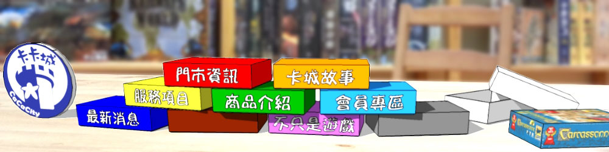
2006年的夏天，卡卡城以三重店起家，從此開啟了長達十年的桌遊生涯，從一家連客人都擔心的飲料桌遊店，到如今在大台北地區擁有六家專業桌遊休閒館，這三千多個日子中有多少故事呢？鏡漫遊特別向東門店的Ethan、公館店的阿KEN以及永春店的小羅三位店長蒐集了過往的點點滴滴。
誤打誤撞，飲料店變身桌遊店
卡卡城原本是一家在三重的泡沫紅茶店。
但在開店一個月後便搖身一變成為了「桌遊」紅茶店。
時光回溯到2006年的6月，創始人馬克老爹辭去了遊戲軟體業的工作，在敦化附近開了一家飲料店。那時他根本不知道桌遊是什麼，直到一位客人帶了一款《卡卡頌》到店裡，才開啟了老爹長達十年的桌遊店奮鬥史。
最資深的店長小羅談到當初的艱辛：「老爹下決定超迅速，同年的7月就決定轉型成桌遊飲料店，還搬到三重。那時候一杯飲料最便宜15元，可以讓你玩一整天。你想想，一整個暑假下來財報會有多難看。連熟客都看不下去說老闆你這樣會倒啊！因此都拼命點飲料聊表支持。」最後，為了維持收支平衡，老爹決心重操舊業，並用自己在公司的薪水去貼補店內的損失。「你見過這種神奇的老闆嗎？」
老爹的熱情與狂想在店長們看來猶如野火燎原一般猛烈。「他一看第二年收支報表打平了，又打起了擴店的主意，於是三重店從一樓變成了兩個樓面的大店。」其他的桌遊店業者完全不知道卡卡城怎麼經營得起來。「當時台中有一家『遊戲帝國』桌遊店，還兼賣飲食，到最後也收了。在PTT上還發文問我們到底怎麼撐下去的啊！」
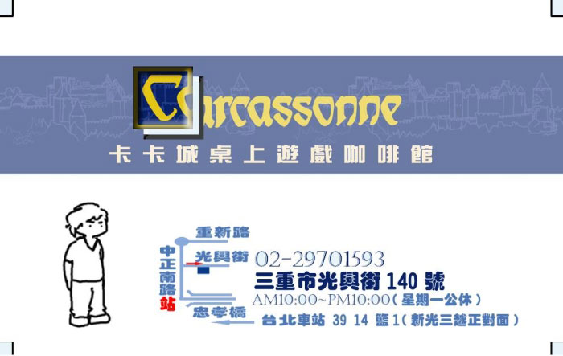
馬克老爹為卡卡城設計的第一張名片（圖片來源：卡卡城官方網站）
桌遊與經營風格是最大的賣點
創業之初，客人踏進卡卡城的第一句話大多是：「這裡是網咖嗎？有沒有賣PS3啊？」因此想讓大眾知道桌遊是什麼可讓老爹與店長們絞盡了腦汁。
「永春店由我接管時，我就想如何不花大錢就能行銷？說與其花五萬打廣告，不如弄一個臉書打卡景點，讓玩家可以拍照打卡，效果應該更好！於是我請了畫師在店牆面畫了精美的壁畫。結果根本沒有人會拍照，因為他就在遊戲區旁邊，你很難不影響其他客人打卡。結果客人大多是在比壁畫更便宜的『魔戒聖戰典藏版』旁邊打卡。」小羅感嘆道：「花了一筆錢學到一課：桌遊才是最大的賣點啊！」
幽默感也是吸引客人的重要關鍵。Ethan拿出一張黑黑的名片笑道：「我喜歡跟客人交朋友，也喜歡跟他們開玩笑。像我自己有印名片，黑色燙金，上面只有兩個詞：『閉嘴STFU』。遞給太吵的客人反而能幽默地達成目的，氣氛也不會僵掉。」
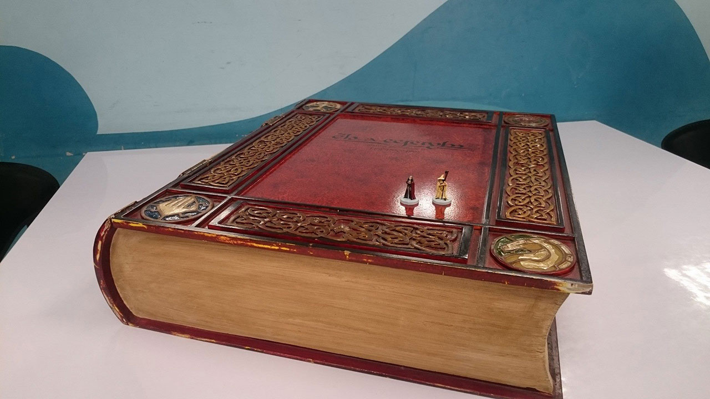
卡卡城永春店鎮店之寶《魔戒聖戰典藏版》（圖片來源：卡卡城永春店FB）
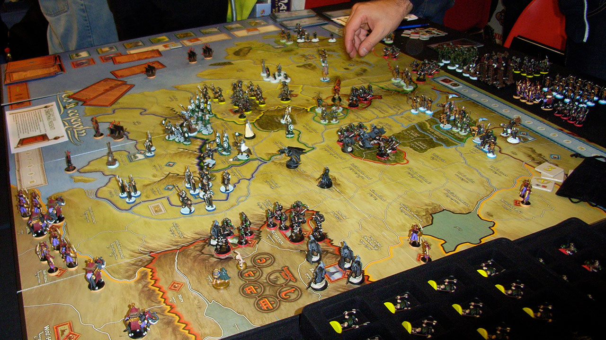
卡卡城永春店的鎮店之寶，將近22K購入的魔戒聖戰典藏版（圖片來源：BGG）
如何練就一名店長？
談起店長是怎如何挑選時，三位店長都表示「其實我們每一位店長都是熟客變來的。」老爹很真誠，也很愛玩，許多老客人被他感召就從玩家轉職成為店長。「老爹很放任我們發展。」東門店的Ethan談到自身經歷笑著說：「像我在2011年就當過青年店的店長，但後來想出去闖闖，半年就辭別了，跑去當了四年業務員，但做業務實在令人心倦。前年卡卡城問我要不要回來，我就又當了東門店的店長。其實卡卡城更像一個大家庭，你很難割捨，很多人離開了還會再『浪子回頭』。」
每一位店長在馬克老爹的帶領下各自發展獨有的風格。東門店主打輕鬆的派對遊戲，永春店較多資深玩家喜愛的策略遊戲，公館店則是兩者兼有之。所有店長都相信桌遊店的存在不只是做生意，更是要把歡樂帶給大眾。
店長的能力其實是支持桌遊店最重要的環節，畢竟教學、與人互動的經驗都不是幾天的訓練可以完成的事情。而在挑選遊戲方面，桌遊店店長可與品酒師堪比「對我來說，我的工作是幫玩家挑他們可能會喜歡的遊戲，我會希望我幫玩家挑的，是他們喜歡而且能玩的遊戲。聽玩家喜好的遊戲，之前玩過什麼，可以大致排除什麼遊戲不應該拿給他。」
當面對堅持一定要嘗試某款遊戲的玩家時，Ethan也輕鬆地表示：「一定會有這種客人，從網路看到或朋友口中聽到某款遊戲好玩，我就會跟他說：『一款遊戲設計得好不好，這可能是客觀的。但是好不好玩，百分百是主觀的。』我會告訴客人，我會帶你玩，也很願意教你，試著把遊戲的重點告訴你，可是我必須告訴客人不能抱太大的期望。然後會順便介紹我覺得合適的其他遊戲，看客人買不買單囉。」
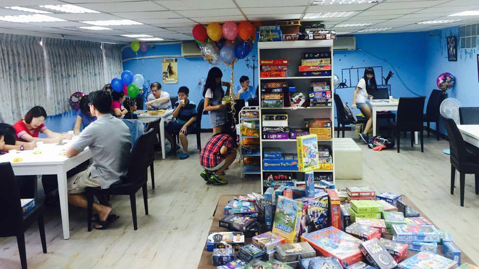
場地較寬闊的東門店時常會有活動（圖片來源：卡卡城東門店FB）
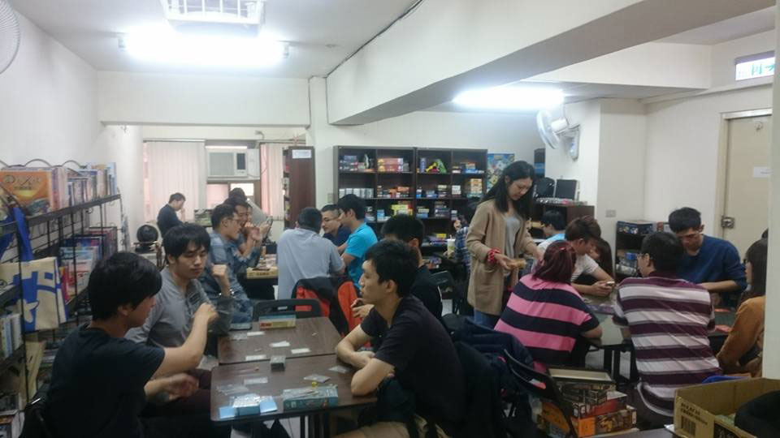
比鄰師大、台大的公館店來客絡繹不絕，經常讓阿KEN忙得不亦樂乎（圖片來源：卡卡城公館店）
因此如何與客人進行良好的溝通並且觀察其所需，恐怕才是身為店長最重要的工作，這點公館店的阿KEN深有同感：「我覺得，教學是相對、是互動的，若客人有禮貌、肯學，店長自然會多花些心力與之互動；反之，店長可能就只是稍微介紹。畢竟店內只有一人，店長會依自己心中訂的比例去分配。說實在的：『客人在挑選我們，我們同時也在挑選客人。』」
未來怎麼走？
「繼續在卡卡城囉！順便找找適合當店長的可用之才。」如今在老爹與各店店長的努力支撐下終於撐起了一片天。相信隨著臺灣桌遊玩家與日漸多的情形下，卡卡城更能在不遠的未來再進化，從而將桌遊店文化深植大眾心中。
卡卡城桌上遊戲休閒館 三重創始店
新北市三重區光興街140號
附註：
- 東門店在採訪後不久便宣布改點，新分店搬遷至永和樂華夜市附近。
- 永春店的小羅目前正在培訓新店長小林，因此很快也會暫居幕後。
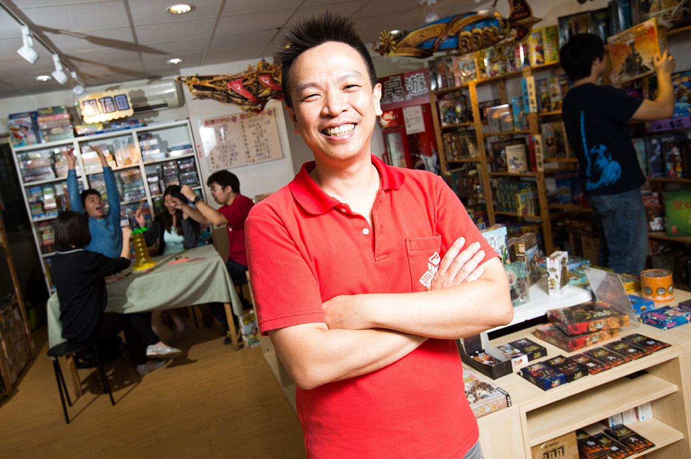
他像傻子，千里環台、深入偏鄉，理念是「帶給人類真正的快樂」。
他也像瘋子，為挽救桌遊事業把房子賣了，被朋友說「你窮到只剩下信念」。
他的公司熬了4年才轉虧為盈；現在擁全台37家店，是台灣桌遊產業最大的連鎖實體通路。
他，是「瘋桌遊」創辦人黃家樺。
「我們賣得不只是桌遊，而是快樂。」一見面，41歲的黃家樺劈頭就說這句話。他露出大男孩般的陽光笑容，笑的時候眼睛幾乎瞇成一條線。
「在這之前我做過銀行業、科技業......還沒30歲年薪就破百萬。」黃家樺說，當初要投入桌遊業，甚至有大陸的台商朋友勸他「這行不能做，因為連在大陸都做不起來。」
為了「賣快樂」辭去眾人稱羨的高薪工作？何等的雄心壯志？好多問號在心中浮現。
「我從小就想開一家不計盈虧的玩具店。」黃家樺在宜蘭長大，「鄉下地方有很多玩具店，但為了生存，常會欺騙小孩。」他說，「我想開玩具店就是想帶給孩子最純真的快樂，後來發現桌遊店更好，因為桌遊更適合親子同樂。」
大兒子3歲時，他開始在網路揪團，「我們提供遊戲，在外面找個餐廳或咖啡店，爸爸媽媽只要負責低消，所有親子就可以一起玩桌遊。」當時有很多家庭共襄盛舉，但也馬上碰到困難。
一開始店員還很委婉勸告他們：「可不可以請你們小聲一點？」但小孩天性人來瘋、愛吵鬧，店員後來說法變成「下次可不可以請你們換一個地方？」從Ａ地被趕到Ｂ地，再從Ｂ地被趕到Ｃ地......屢試不爽。
「一直被趕不是辦法。」他心想「能不能有個友善的地方能讓親子安心同樂？」評估市場後，有了開桌遊店的念頭。
友人勸「讓我救救你，你不要再做了」
2010年年底，第一家瘋桌遊在板橋開幕，並在隔年3月就簽下2間加盟店。「在新竹開了第一家加盟店後，別人以為就會賺錢，但其實很坎坷。」黃家樺說，一開始幾乎是「賠人事、賠運費、賠稅」，加上與桌遊區域代理商的進貨條件談不攏，更墊高他們的營運成本。2011年，他們決定賭一把：中止與店內最大桌遊進口代理商的合作關係，不再進他們的貨。
黃家樺說，當時的想法是「台灣的桌遊市場， 應該讓台灣人決定。」他說，「上帝幫我們關了一扇門，也開了另一窗，這個決定讓我們自己找機會跟其他人合作。」但也帶來陣痛期，「頓時我們店家的展示架，三分之二都變成空的，只好將其他商品重複擺設，把店面填滿。」
持續的入不敷出，讓瘋桌遊歷經4年的黑暗時光。
「你窮到只剩下信念。」「讓我救救你，你不要再做了。」「當你的家人好可憐。」這些是黃家樺在事業谷底時，旁人對他的勸告。「那段時間我連房子都賣了，幾乎所有人都跟我說『麥擱做啊』。」
三國殺 曾是爭議 也是黑暗裡的曙光
《三國殺》是瘋桌遊的招牌遊戲。2012年，成為他們在黑暗裡的曙光。
「我先花了3個月跟三國殺簽到獨家代理，又花了5個月的時間得到授權。」黃家樺透露，當時根本沒錢付授權金，他非常感謝一位只見過3次面的貴人，願意投資60萬的「救命錢」，才解燃眉之急。
買到授權就可以自己印刷、發行，「全世界只有我們是Made in Taiwan，」他說，桌遊不能只有通路，「在大陸印好再運回台灣其實比較便宜，但Made in Taiwan還是比Made in China好，於是我們串聯本地的製造商，讓大家有賺錢機會，整個產業自然愈做愈好。」
然而《三國殺》有個爭議事件，被說是抄襲知名桌遊《BANG！》，而受到輿論指責。
「我們的看法很簡單，只要法律上合法，就沒有問題。」黃家樺直率地說，「它的確有爭議，你可以說它模仿、抄襲，但不能說它是盜版或違法。」他說，創意可以激發更多的創意，「例如《BANG！》不能兩個人玩，但《三國殺》可以，這就是一個改良。」「《三國殺》後來也走出自己的路，超出原有的範圍很多。」
也許登頂前，總得爬過一段難熬的好漢坡。瘋桌遊終於在2014年轉虧為盈，加盟店一間一間開，如今全台店面總數已達37家。
「別人講什麼不重要，重要的是你自己要什麼；別人講什麼也很重要，因為別人講的，都是你做出來的結果。」這是黃家樺最常對員工講的話。
他說，「如果我當初放棄了，大家現在就會說『我當初不是告訴你不能做嗎？』」但大家如今看到他都說：「這麼難的行業也被你做起來，你當初很有眼光。」
環台推廣桌遊 遇上行動不便的長者 結果…
2012年，看了《陣頭》這部電影，讓黃家樺興起環島推廣桌遊的念頭，「電影裡的人扛著三太子環台，我們也可以！」他開放大眾申請，哪怕上山下海，只要提出需求，就去跟大家一起玩桌遊，「2012年我們全台就辦了40幾場活動，全不收費。」
有一場在花蓮跟長者交流的活動，讓他永生難忘。
「我們到現場，所有的長者坐著輪椅被推進來，有的甚至還病懨懨。」他心想，「糟糕，這樣怎麼玩遊戲？」仍只能硬著頭皮上。
「我們開始玩遊戲吧！」他故做鎮定地說。
現場一片沉寂，鴉雀無聲。
「若是小朋友，我說要玩遊戲，絕對high翻天，但當時一點聲音都沒有。」
長者們玩的第一個遊戲，是反應類桌遊《祕寶快手》。這個遊戲的玩法是：依序翻開一張遊戲卡片，找出遊戲卡片裡唯一一個圖形和數量是正確的，然後用手搶拍該答案圖板。
由於桌子必須夠大，才能容納輪椅的空間，黃家樺發現長者「手根本拍不到」。「我想到一個方法，用喊的，把答案講出來就好。」他說，「後來發現他們連牌都看不清楚，我只好請社工用念的，再讓他們作答。」
第一桌的人玩完換第二桌，他發現有長者戴著氧氣罩，根本沒辦法講話。「我只好請社工把卡片拿到他面前，請他用手比答案是什麼，比對了就得分。」
經過一番波折，終於順利完成第一個遊戲。
接著玩第二個遊戲：《迴旋路易》。遊戲規則大致是：為了躲過搗蛋鬼路易的攻擊，必須不斷拍打眼前的跳板。
遊戲過程中，一位長者忽然不斷拍打跳板，激昂地大喊「我打死你這個共匪！我打死你這個共匪！」。黃家樺又驚又喜，他說，看到原本羸弱的長者「充滿活力」，一切辛苦都值得了。
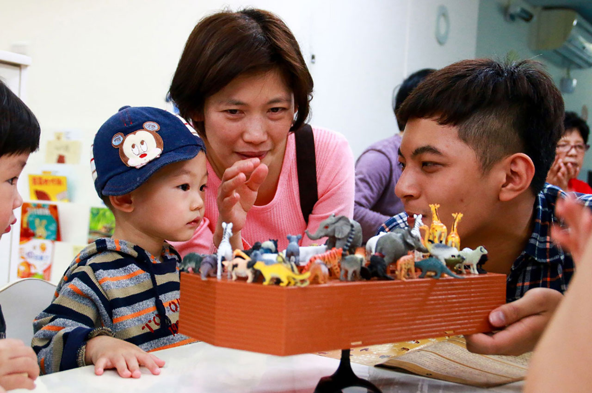
瘋桌遊到全台各地教小朋友玩桌遊（圖片來源：瘋桌遊提供）
到桌遊店買咖啡？神祕客人帶來意外驚喜
2010年，五都選舉前的某一天晚上，一位拿著候選人旗幟的造勢民眾，忽然造訪板橋總店，帶給黃家樺一個「意外的禮物」。
「你們有沒有賣咖啡？」那位民眾對黃家樺說。
「我們是桌遊店，要買咖啡應該去隔壁的咖啡店買吧。」黃家樺心裡雖然這麼想，但他靈光乍現，「我請他給我3分鐘的時間，我們坐下來玩一場桌遊，而我去隔壁買一杯咖啡給他。」
「我希望那位客人3分鐘後，能夠知道我們在幹麻。」黃家樺說，他們當初玩的是《BLINK》這款桌遊，玩完遊戲後，那位客人忽然說：「我下次可不可以帶我老婆來玩？」
「原來他老婆2年前罹患憂鬱症，夫妻倆變得很沒有話講，他覺得玩桌遊也許可以改善兩人關係。」黃家樺說，一周後他真的帶他老婆來店裡玩，老婆玩完後真的笑了，還買了桌遊回去。「這件事讓我很感動，原來桌遊真的可以帶給別人快樂。」
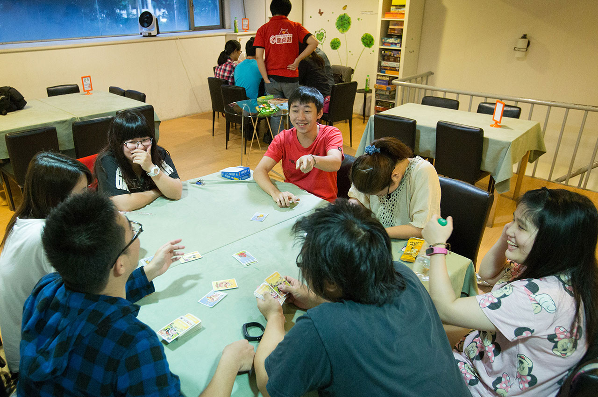
瘋桌遊提供場地服務，讓親朋好友一起玩桌遊，店員還會親自教學
堅持「親子」理念 生意竟然往外推
「親子」是瘋桌遊主打的客群，而黃家樺堅持理念的方式也很特別。
「很多家長會問我，哪款遊戲適合小孩玩。但我會先問他『你是要給他玩還是跟他一起玩？』如果只是給小孩玩的，我會拜託他不要買。」
怎麼會有老闆將生意往外推？這是我們內心的OS。
「桌遊如果你不陪他玩，那就不好玩，而且桌遊比玩具貴，那你就買玩具就好。」黃家樺說，大部分家長沒辦法陪小孩的理由是「很忙」、「沒時間」。但他強調，人是學習的動物，如果父母因為工作很忙沒時間陪小孩，小孩長大後，也會因為同樣理由而說沒有時間陪父母。
「如果你現在沒有時間陪他，那他以後就沒有時間陪你。」他說，如果家長能接受這個後果，「那就繼續忙吧。」
從玩遊戲裡 找到孩子的強項
對一些小朋友來說，「親子一起玩遊戲」是種奢侈，因為許多父母對遊戲仍有刻板印象。
「遊戲對很多家長來說可能是負面的。」黃家樺說，他去學校演講時，會先想辦法讓老師認同，「我們讓老師知道，玩也是一種學習，當老師認同了，家長也比較容易認同。」
而桌遊對德國人來說，更是「親子交流」以及「教育學習」的一部分。他舉例，「晚餐吃完後，台灣的家庭不是在看電視，就是各做各的事；德國人則是全家一起玩桌遊，分享各自在學校、工作上的喜怒哀樂。」
黃家樺更從他兒子玩拼圖的過程，對「寓教於樂」有更深的體悟。
「我兒子1歲半時第一次玩拼圖，不久後，我發現他拼圖拼得比大人還快。」他觀察他兒子拼圖拼很快不是因為邏輯好，而是記憶力好。「玩了3、4次後，就知道拼圖要放在哪。」他從遊戲中發現，兒子的強項是「記憶」跟「空間智能」，以後就能從兒子的這2個強項來鼓勵他。
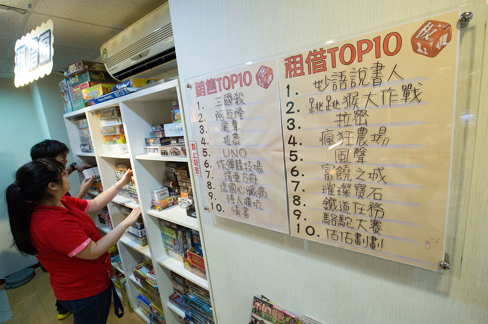
瘋桌遊的桌遊租借區，有銷售排行榜供客人參考
扶植本土設計師 推廣在地遊戲
「桌遊市場目前在台灣還是非常小，要全職做一個桌遊設計師幾乎很難生存。」黃家樺談到台灣桌遊的困境，難得地嚴肅起來。
「一個遊戲設計師可能在他的第5個或第6個遊戲才能成為經典，可是往往在第1個遊戲就死掉了。」他說，「有的設計師把積蓄花光，卻連500套遊戲都賣不完，如果是你，你還有信心嗎？」
「一個產業要引爆，一定要有在地化的東西。」他舉例，「《卡坦島》這款桌遊很好玩，但《卡坦島》跟我們沒有人文及情感連結，如果有個《台灣島》的遊戲是不是更好？」
有鑑於此，瘋桌遊今年開始發行原創遊戲，黃家樺鼓勵台灣本土設計師，「一款遊戲，只要一家店一個月能賣3個，我就幫你做這個遊戲。」他解釋，這也是為什麼加盟店要在30家以上的原因，「一家店一個月賣3個，瘋桌遊所有店家一年就能賣上千個，這就是規模經濟的效應。」黃家樺說，希望用在地化的方式，推廣在地遊戲，讓更多人認識桌遊。
「瘋桌遊未來的目標是什麼？」採訪尾聲，我又詢問了一次黃創辦人。
他不假思索地說：帶給更多人快樂！
瘋桌遊 板橋總店
新北市板橋區南雅南路二段11-26號
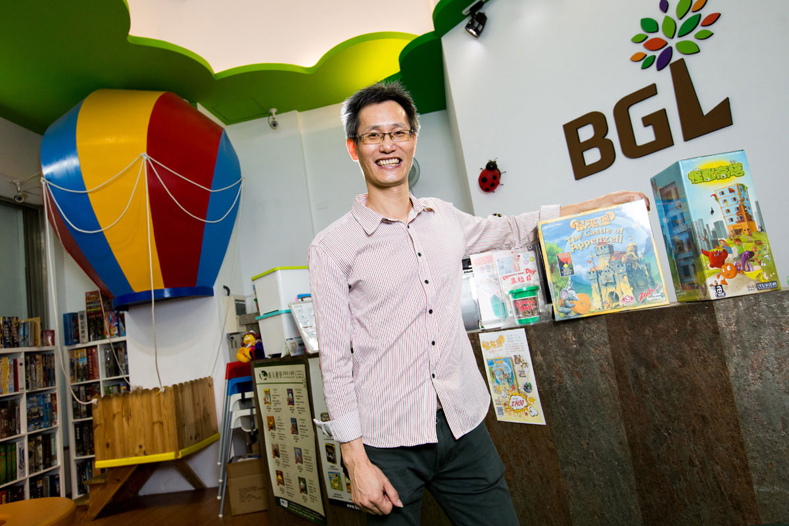
來到位於台中民俗公園旁的勃根地旅順店，一輛貨車停在門口卸貨。上百箱貨物，一批一批運進店內後方、將近40坪大的倉儲中心裡存放。勃根地老闆邱文杰正細心整理；打開箱子，裡頭全是桌遊。
今年十月底才開幕的旅順店，是勃根地在大台中的最新據點，也是第六家直營店。這六家店的位置，幾乎涵蓋舊台中市的各個行政區；說邱文杰是大台中桌遊界的「扛霸子」，一點也不為過。
影音漫畫出租轉型 打造桌遊王國
46歲的邱文杰，原本是經營影音光碟、漫畫出租的業者。但隨著網路普及、頻寬持續加大，不管是漫畫或電影戲劇，都可以透過線上管道獲得，也造成這類出租店的逐漸式微。「再叫我回去吃人頭路，我也不會想，自由習慣了。」面對產業不景氣，為了延續自己的事業，大約七年前，他開始思考轉型的可能。
「你知道什麼是桌遊嗎？」與客人閒聊的過程中，邱文杰第一次聽到「桌遊」這個名詞。他喜歡「大富翁」，但當時他並不知道大富翁就是一種桌遊，也從來沒去過桌遊店。不過，他回憶起年少玩著大富翁得到的快樂，桌遊確實勾起了他的興趣；他研究了幾天，找了一家桌遊店觀摩，看到三五好友齊聚、沉浸遊戲的歡樂氛圍，就立刻決定要投入桌遊店的經營。
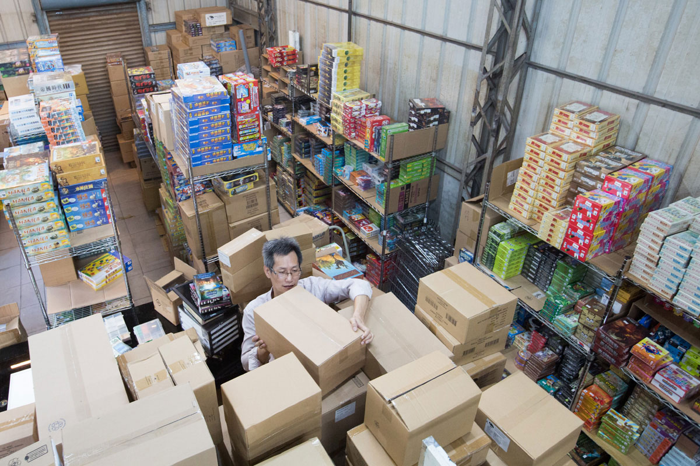
採訪時正好遇到進貨，貨物都會先運到旅順店，然後再分送其他分店
2009年，邱文杰在中興大學校門口學府路上，開設了「生活休閒館」，是今日勃根地的前身；當時只要50元入場，就能看漫畫、看電影、打桌遊，玩上一整天，熱門時段幾乎天天爆滿。2013年在台中光復路創立勃根地後，依舊延續這種以來客數量衝高營收的經營模式，入場費調整為百元，但更專注在桌遊，僅保留了漫畫區，讓玩家可以在休息或等待時打發時間。
此外，勃根地也是少數提供桌遊出租的店家。「出租這塊市場是我比較瞭解的，」經營光碟、漫畫出租多年，邱文杰把經驗複製到桌遊，店內原本就有出租軟體的建置，品項管理上也設有一套完善制度。
例如桌遊的遊戲配件多，假如玩家不小心遺失重要配件，可能影響遊戲進行；但勃根地熱門遊戲都有五到八盒提供出租，其中一盒缺件了，就會拿來做為其他盒的補件品，維持遊戲完整性。這也是因為勃根地規模大，一般小型店家可能就無法做到這樣的配置。
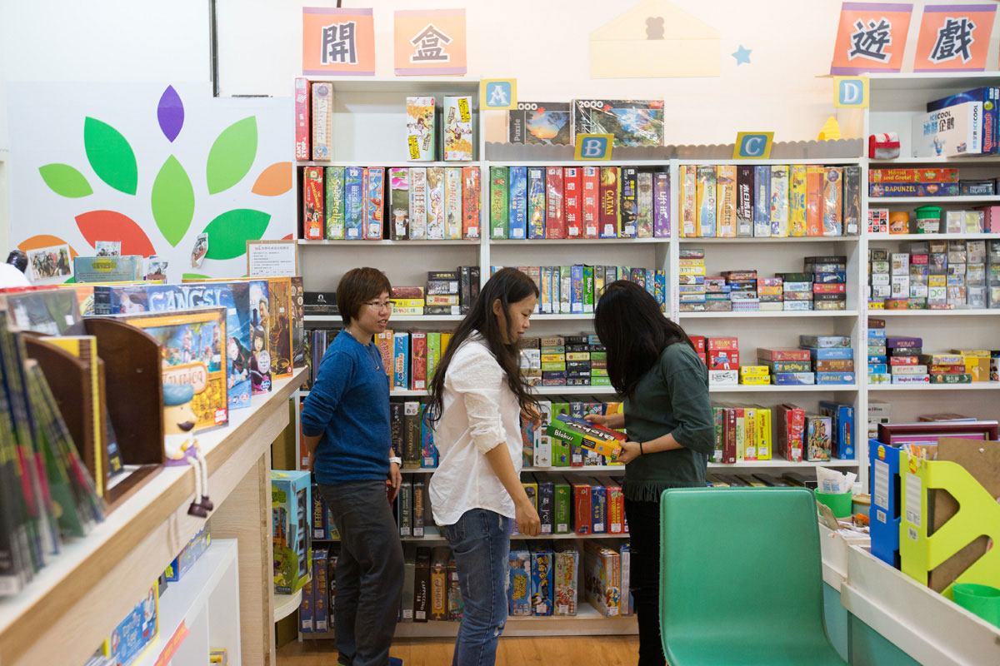
勃根地除了販售桌遊外，也是少數提供桌遊出租的店家
快速展店 加盟主也要愛桌遊！
從最早的光復總店起步，短短三年間，勃根地陸續又開了NOVA英才店、NOVA東海店、大魯閣新時代店、南和店及旅順店，展店非常快速。對於邱文杰來說，展店固然是事業版圖的擴張，但他心中還有一個想法：「要讓更多人認識桌遊、愛上桌遊！」
承租旅順店店面時，他就遇到了仲介不知道桌遊是什麼的情況。「對方以為是電玩，屋主不要做網咖。」當時仲介還特別去請教警察，結果警察碰巧也是桌遊玩家，大力推薦勃根地，才讓屋主、仲介卸下心防。
另外，邱文杰也嘗試在人潮匯集的百貨商場設點。例如在大魯閣新時代購物中心中的新時代店，就是少見位於親子賣場樓層內的桌遊店。他希望家長帶小朋友經過時，「會想問這是什麼東西，怎麼這麼多人在玩？」然後透過親身參與，瞭解桌遊的教育意義。但較高的櫃位租金，也讓新時代店採取不同其他店面的計時制，藉由提高翻桌率確保利潤。
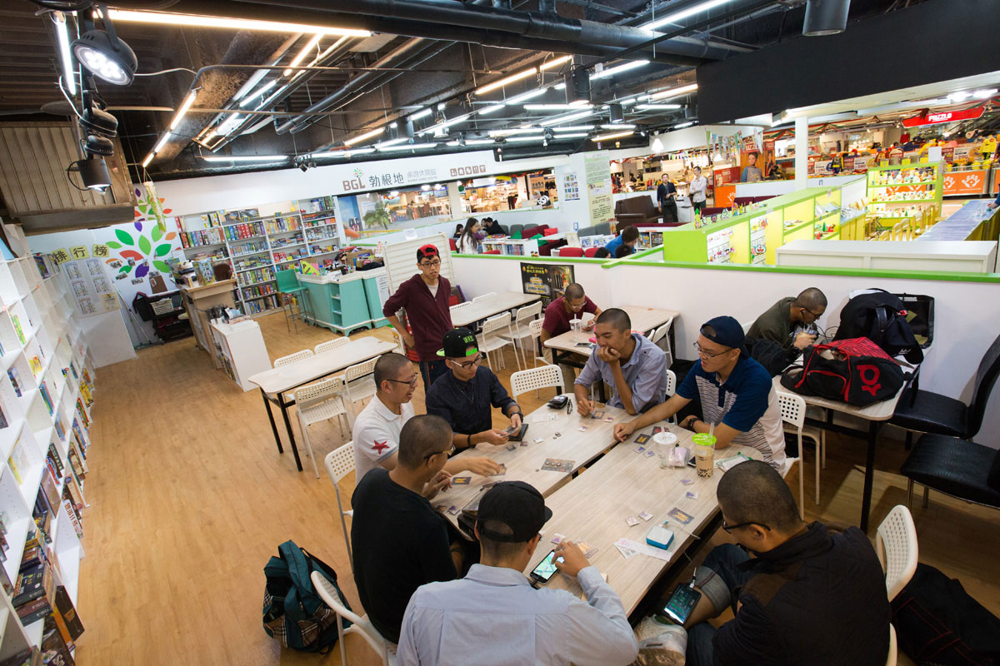
新時代店位於百貨商場內的開放櫃位，很容易吸引逛街人潮駐足
除了直營店，勃根地今年也開放加盟，分別在台中市西區、嘉義、台南授權三家加盟店。但邱文杰希望能維持加盟店的品質，所以並未公開招募加盟主；三家店負責人都是原本勃根地的玩家，對於桌遊充滿熱情，有開店的計畫，才與勃根地合作。
由於三家店的加盟主都是年輕玩家，洽談加盟時，邱文杰定下了一個特別規定：需要與加盟主的父母見面，希望長輩也能認同這個行業。會有這個規定，其實原自於勃根地的另一位股東魏瑋琤。
魏瑋琤是桃園人，南下到中興大學攻讀化學碩士，與邱文杰相識於勃根地前身生活休閒館。當時還在學的魏瑋琤決心要投入桌遊店經營，但她的父親因為不瞭解桌遊而反對，畢竟女兒碩士畢業，傳統思維還是會希望她能進入一家穩定的公司就職。
「妳現在無法說服他的，妳只有做好給他看，成功了，才能證明妳是對的。」當年，在父女歧異難以化解的情況下，邱文杰給了這樣的建議。
魏瑋琤也自知無法獲得父親祝福，只能期待時間撫平扞格，於是她全心投入勃根地的經營。時至今日，勃根地發展到現今六家直營店、三家加盟店的規模，做出一番成績。魏父也終於接受，並成為勃根地的支持者，三不五時會帶親朋好友到店內遊戲，協助女兒推廣桌遊。此外，由於魏瑋琤的地緣關係，以及魏父的協助，勃根地也開始計畫到桃園展店，將做為北上試水溫的第一站。
用桌遊 找回最初的喜悅
從夕陽產業、跳到新興的桌遊市場，熱愛策略遊戲的邱文杰，認為桌遊改變了他的經營哲學，「從A點到B點，不是只有一個路線而已。」
他體認到，遊戲的變化無窮，推廣、經營桌遊也不是只有開店，因此勃根地近年代理引進了20款桌遊，未來還有自行開發桌遊的計畫，以通路為核心，全方位的投入發展桌遊產業。就像勃根地的LOGO，是一棵大樹；這棵大樹除了向下扎根，也要蓬勃向上，也要開枝散葉。
他也希望，讓桌遊可以變得更普及、更深入家庭，變成一個日常的娛樂活動。「未來提到桌遊，就像平常你說唱歌、看電影一樣；這個市場還有很大的發展空間。」
尤其3C產品發達，很多人都透過網路聯繫，實際碰面的機會少了；就算相聚，可能也是低著頭，各自滑各自的手機。桌遊，可以讓大家重新有了連結，「其實人原本就喜歡在一起玩，那種快樂是看得到的。」
就像掛在店內的標語，勃根地企圖用桌遊幫助人們，遠離人際疏離。
「找回最初的喜悅。」
勃根地桌遊休閒館 光復總店
台中市中區光復路197號
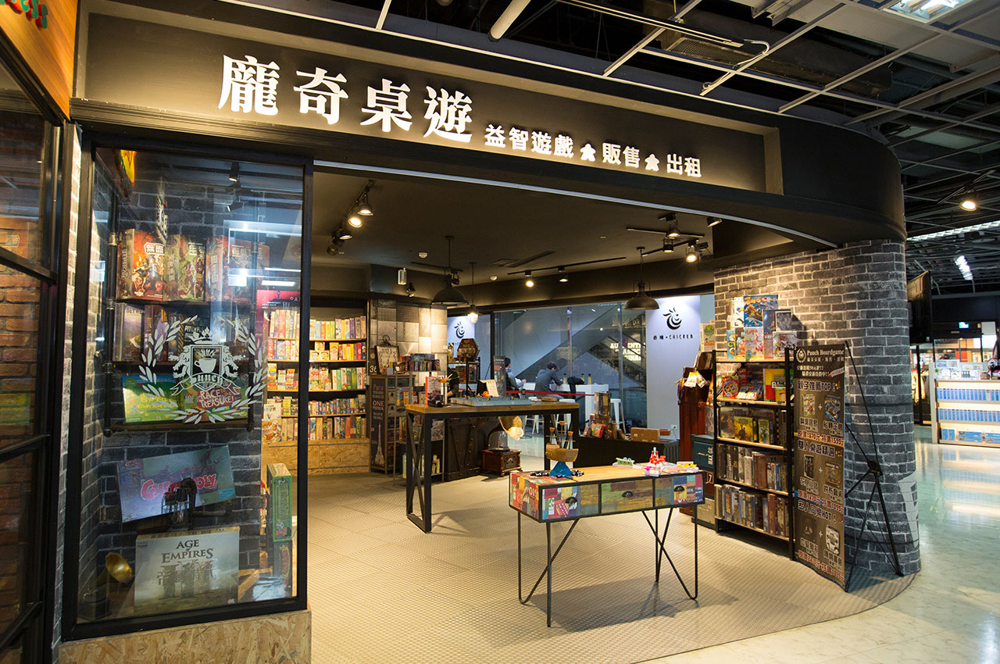
無論是富饒之城、矮人礦坑，還是地產大亨，龐奇桌遊店老闆孫傳坤談及當初接觸的著名桌遊，口氣如數家珍。「以前每有一款新遊戲我就會教全部的人玩，很興奮的跟大家分享，覺得這東西真的太棒了，怎麼會沒有人知道？」
七年前的孫傳坤對桌遊懵懵懂懂，真正的夢想是當一間餐廳老闆，然而為了吸引更多顧客上門，引進桌上遊戲，沒想到一玩成癮，搭配紮實的餐飲經驗和一流的商業腦袋，他成功Punch夢想和事業，成立龐奇桌遊餐廳，店內有得玩又有得吃，而且收費便宜，如今更是桌遊迷的朝聖地。
今年六月，龐奇在人潮滾滾的大統百貨五福店附近開新店，一改之前的「複合式餐飲」形式，只提供遊戲販售及出借服務，令玩家相當意外。
對孫傳坤而言，卻是一次新的挑戰。
總店便利 陽明店舒適
位於苓雅區的總店，捷運站5分鐘的路程，交通方便，還特別將騎樓租下，供客人停車。總店吸引的客群廣泛，學生下課後也會呼朋引伴來玩，假日總是吵雜充滿人氣。
陽明店交通較不便利，但擁有35坪的寬敞空間，以美式咖啡廳為裝潢主調，有磚牆和沙發區等，讓客人能夠舒適地玩上一下午的遊戲。「陽明店的老闆是個專業的桌遊阿宅，」孫傳坤笑道。因為有個熱愛桌遊的店長，玩家能在陽明店挖掘到絕版遊戲（有些是店長的私人收藏），也能玩到最新的遊戲，「因為他個人會去追逐這些東西，他會冒著被老婆殺掉的生命危險買。他本身有兩個小孩，所以難的遊戲有，兒童遊戲也有。」此外陽明店的裝潢時髦，也吸引年輕人前往然後打卡。
這兩間街邊店的營運模式差不多，但靠著座落區域的不同，成功區分客群。總店客源龐雜，從學生到上班族，從情侶到家庭都有，多是來尋開心的團體玩家，客滿時，會聽到此起彼落的歡呼聲，適合享受歡樂氣氛的客人；而要求環境品質的玩家可以選擇到陽明店消費。
實現夢想的店 為客戶量身推薦遊戲
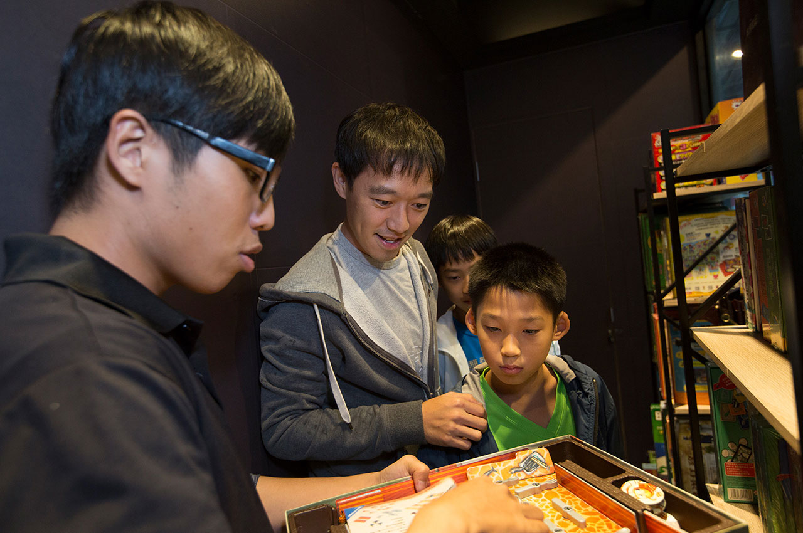
不論是重度玩家或親子同赴，龐奇店員都能介紹
在第一間分店，也就是陽明店根基打穩了之後，孫傳坤考慮繼續往外展店，但是「到底有沒有必要再去開一間店，一樣模式的店？」孫傳坤說，「我們現在的目的是希望帶領高雄的桌遊店做一個成長，我們不只是靠桌遊賺錢，這已經是想把桌遊帶入另一個層次。」
新開幕的大統五福店，店面坪數雖小，但裝潢下了一番功夫。最有氣魄的是，這裡不但沒有餐點，也沒有遊玩區，只有一個平台上放置供試玩的二至三款桌遊，讓店員能夠專心且專精地介紹桌遊。
一般桌遊店都無法好好介紹遊戲，不論是基於人手不足，或訓練不足。雖然龐奇只聘請正職員工，不免也面臨這樣的問題，客人一多，店員既要做遊戲教學，還要點菜出餐，往往忙不過來。有了大統五福店，孫傳坤終於能夠落實精緻推廣桌遊的理念，「這邊就是我另外一個達成夢想的地方，我希望有人能好好地介紹遊戲，量身推薦，」孫傳坤說。
此外，大統百貨附近人潮多，有人潮就會有買氣，十分適合做桌遊推廣，在路邊辦活動再將客人帶進店，「效果比買粉絲團廣告還好！」
五福店營業額三成來自國外觀光客
五福店的目標之一，是成為台灣的「黃色潛水艇」。黃色潛水艇（Yellow submarine）為大阪橋一間桌遊專賣店，桌遊界的遊客只要到日本，就一定會安排去該店大肆掃貨的行程。「未來我希望龐奇成為這樣的店！」
曾有香港的桌遊設計師在龐奇找到已經絕版的遊戲，回去後在桌遊圈宣傳；也有設計師對孫傳坤說，他們來台原本都在台北玩，現在會特地搭高鐵下高雄到龐奇買桌遊，順便逛逛高雄。對港台玩家來說，龐奇已是重要桌遊地標。孫傳坤希望未來除了香港，也能觸及日本桌遊設計師，進一步讓國際玩家和優秀的設計師們更加注目龐奇。
中國觀光客也喜歡來台買遊戲，「因為很多台灣的遊戲，中國沒有。」中國市場的購買力是台灣的十倍，但桌遊發展落後台灣十年，進口的遊戲少，出產遊戲也不多。五福店營業額有三成來自這些國外觀光客。另外，有許多會講華語的僑生會入店買桌遊，這倒是當初所料未及的。
要求員工自學遊戲 提升店家水準
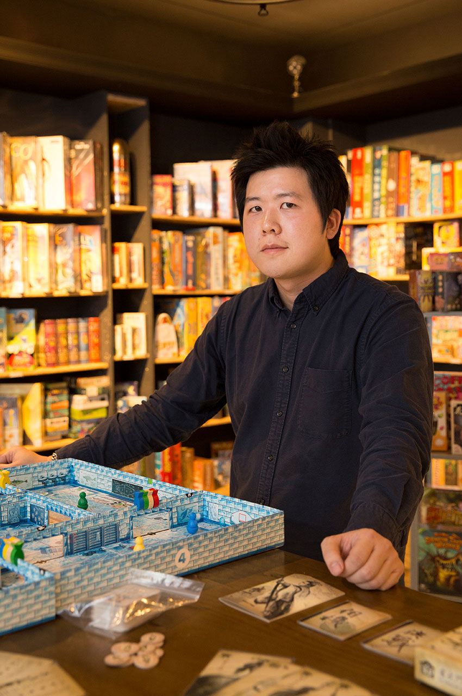
孫傳坤年輕，但對產業未來發展看得遠看得透徹
過去龐奇也和大多數的餐廳一樣，多聘請工讀生，人力好調配，人事成本低，但時間一久，孫傳坤發現此非長久之計。工讀生總是做了一年兩年就辭職，雖然來應徵的工讀生多對桌遊有興趣，但專業程度不夠，一個人平均只會教學三十至五十款桌遊，一聘請新人就要重頭教起。
「所以我現在知道我們現在需要的員工是，自己在家也會自學遊戲，自己也喜歡桌遊，會自己成長，我們不用教也會在這個圈子裡面，他自己會研讀，自己有朋友，他的興趣就是在桌遊。」會自我精進的員工，每位店員能教學的遊戲從平均50至100款，到現在的300至500款，大不相同，店內水準大幅提升。
每個月至少有兩到三次的經銷商會議，會讓全體員工參加，一起學新遊戲，這時候的時數都算是工作時間。積極的教育訓練，也是龐奇都能維持高水準服務品質的原因之一。
對桌遊有使命感 進別人不進的貨
龐奇每個月平均會進約二十款新遊戲，並盡量各開一盒供客人遊玩，讓店員去推廣，有時刻意將舊遊戲下架，或減少其數量，讓客人接觸新遊戲。為了讓更多人能夠認識台灣在地的優秀遊戲，還特地開闢國產遊戲專區。
但不論是新遊戲或國產遊戲，「老實說，很難賣。」若純粹以商業考量，不應該進這麼多貨，每進一款新的遊戲，就是一筆庫存；每開一盒遊戲，就是拉長回本時間，但孫傳坤希望能夠讓更多人知道這些遊戲有多好玩，「還有就是老闆也想玩啦！」孫傳坤頑皮一笑。
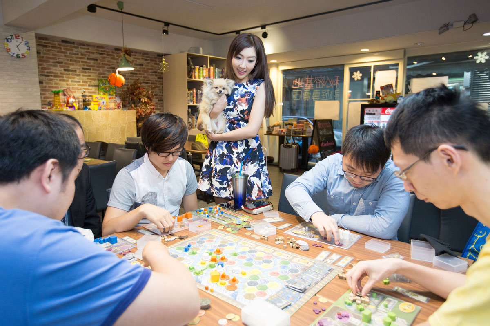
走進位於松江路巷弄內的「秘密基地」，有「小隋棠」之稱的網紅藝人李宓，正與三名友人坐在店內一隅、玩著桌遊。「等我們一下喔！快結束了！」她露出開朗神情，親切的打著招呼。
很難想像，眼前笑吟吟的女孩，曾為憂鬱症所苦。而幫她走出情緒低谷的，就是桌遊。
靠桌遊甩開憂鬱 玩家升級變頭家！
台大戲劇系畢業的李宓，是台灣資生堂前董座千金。雖然家世顯赫，但對演藝工作充滿興趣的她仍毅然投身演藝圈，2011年總統府前一場「寧裸不核」的反核抗議行動，更讓她聲名大噪。
然而在2014年初，李宓遭逢情傷，交往兩年多的男友提出分手，使她夜夜輾轉難眠。「醫生說我得了憂鬱症，必須吃藥治療，」她極力想讓自己擺脫陰霾，只是壞消息接踵而至；母親遭遇一些財務上的困難，讓父親早逝、與母親相依為命的她，心情更加繁亂。
「我那時候沒什麼朋友，很寂寞，心情很糟。」為了替情緒找到出口，李宓想嘗試一些新鮮事物；看到網路上有人在徵人玩桌遊，「我就想說什麼是桌遊，也沒有去過桌遊店，那就去看看好了。」
原本是抱持著姑且一試的心態，沒想到一接觸了桌遊，她就徹底的陷入了這個奇幻世界。「這個世界很單純、很美好。」現實世界太多勾心鬥角，但在遊戲中，輸贏的反應就是那短短一剎那；遊戲結束，再開新局，一切都從頭開始，「過了就過了，大家不會在乎勝負。」
她交到了許多熱愛桌遊、興趣相投的好朋友，也漸漸找回了笑容。「難過的時候，玩桌遊就會完全忘記那些難過的事情，」李宓偏好策略型的遊戲，她喜歡思考、鬥智，這類遊戲可以讓她將心力完全投注其中。她也成了收藏家，桌遊一套套的買，國內買不到的，她就託人從國外帶回來；一櫃、兩櫃......櫃子塞買了，就直接堆在地板，擺滿家中走道。後來她也很少去桌遊店，因為家中就有最熱門的遊戲，朋友們都到她家裡一起玩桌遊。
桌遊帶給她快樂，也讓她不再寂寞。在2015年底，她找了另外兩位合夥人投入資金，決定開一間店，打造自己的桌遊世界；她想邀請更多人一同進入這個世界，享受桌遊的樂趣。
於是，「秘密基地」就這樣誕生了。
結合演藝事業 直播節目推廣桌遊
秘密基地在2015年12月正式開幕，店名是從李宓的名字發想而來，店LOGO的狗狗圖案，則是設計師參考她的愛犬所繪製；店內擺設大多也出自她的巧思，牆上的拼圖，大多是她自己閒暇時一片一片拼出來。店內右方有一個仿壁爐的設計，企圖營造出溫馨的居家感，「希望大家來玩的時候可以把這裡當自己家，很舒適，玩的時候可以很盡興，不要有拘束的感覺。」

「秘密基地」位於松江路巷弄內。李宓只要有空，都會待在店裡與朋友、客人一起玩桌遊
而這裡也已經變成李宓的另一個家。「開店之後我把家裡的桌遊全部搬到了店裡，朋友要找我也都是來店裡找。」目前店內有接近200款遊戲，其中有100多款是李宓的收藏，雖然去她家玩的人少了，不過現在她跟朋友都直接約在店內碰頭；沒有工作行程時，也幾乎都在店裡玩遊戲，甚至親自替客人解說遊戲規則。
「不過，我們要怎樣把規則講到讓客人記得住、聽得懂，就跟學校老師上課一樣，其實是很困難的事情。」有一些中、高階的策略遊戲，光教學可能就要用上3、40分鐘，而整個遊戲過程甚至會花費3到4小時。因此李宓講解規則時，為了讓客人能夠有效吸收，會融入生活化的情節，或串連一些故事來幫助玩家記憶，也更容易理解。
開店已經滿一年，營運也逐漸步上軌道，依照淡、旺季不同，每月營收大概有10萬到20萬不等，淨利則是營收的4成左右。分析來店消費的族群，她觀察，大部分是附近的上班族，其次則是學生，親子來訪的較少。因為店內大多是策略遊戲，難度較高；但多數玩桌遊的人都是想放鬆，不想消耗太多腦力，比較喜歡PARTY類型的遊戲，所以店內客群也偏向特定族群。「雖然少了些優勢，但我覺得這是我們跟其他桌遊店比較不同的地方！」
不過，由於經營桌遊店，現在她也會要求自己多接觸各種不同的桌遊類型。「以前想玩什麼就玩什麼，可是現在要想大家喜歡玩什麼，」這樣的思考邏輯，跟以前當玩家的時候很不一樣。
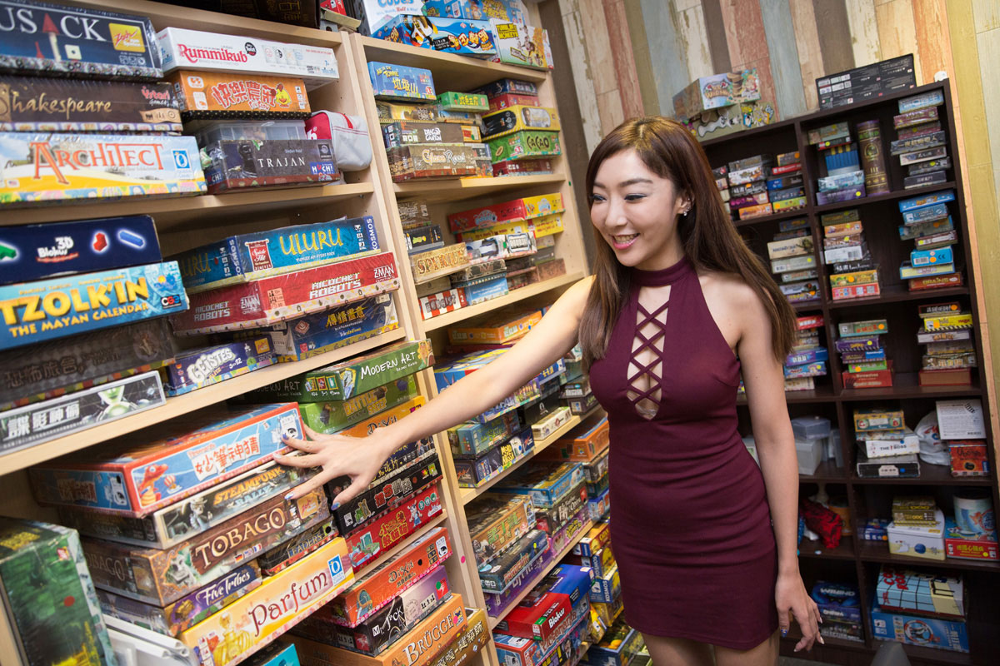
開店時，店內桌遊大部分都是從李宓家裡搬來的
店內遊戲的採購上，李宓也只有一個原則：「朋友推薦好玩我就買！」對她來說，桌遊就是要享受與朋友互動的過程，所以她不只是買自己喜歡的桌遊，「不然買一個遊戲沒有人玩，有什麼樂趣？」
為了推廣桌遊，李宓現在也在RC直播主持節目「秘密桌遊秀」。「我一直在想怎麼把我演藝圈的專業，也跟桌遊這一塊結合；剛好認識RC直播的朋友，他們也想做一個桌遊節目，就開始合作。」
節目攝影棚就在秘密基地店內。直播時，團隊會在店內最角落的桌遊桌架設兩盞燈及攝影機，形成一個獨特的異空間；李宓就是這個空間的掌控者。節目的形式簡單，主要是藉由她與朋友一起玩桌遊的輕鬆互動，讓觀眾瞭解熱門桌遊的玩法。節目進行時，她會不停透過手機關心網友反應，適時回應網友，或是調整遊戲節奏。

李宓在RC直播主持「秘密桌遊秀」，每週二晚上10點都會在店內錄影到深夜
她的企圖心不僅如此，她還是希望能做一個比較正式的預錄節目。「預錄的節目跟直播比，品質還是差很多，畢竟桌遊是很難拍攝的東西。」她進一步舉例，像是來賓的談話、表情，每個人手上的牌、道具，很多地方都需要鏡頭的特寫，「直播也比較做不出來。」
不只是一間店 也是一個家
桌遊跟演藝工作一樣，已成為李宓生活的另一個重心，兩者密不可分，填滿了她的時間、她的心靈，讓她忘卻過去那段憂鬱的日子。「以前不太跟人說話，但玩桌遊後，她變得非常活潑、更有自信。」陪著李宓一路走來的經紀人Lily，也深刻感受到她的轉變。
採訪當下，12月開拍、由李宓擔綱女主角的網路劇《N世代影集》劇組人員正齊聚秘密基地，準備晚上的演員訓練課程。在等待上課前，大家一起玩了《諾亞方舟》、《馬尼拉》，遊戲不但加強了互動，也讓演員能培養默契、更加熟悉彼此。
先前李宓曾推出單曲《無極限》，現在她也積極籌備一張完整專輯，預計明年初會推出，朝向全方位藝人邁進。屆時，生活會更加忙碌了。
「影集開拍後，加上唱片宣傳，會減少來店裡的時間嗎？」記者提問。
「不會，」李宓篤定的回答，「已經把這裡當作自己家了。」
秘密基地桌遊專賣店
台北市中山區松江路259巷31號